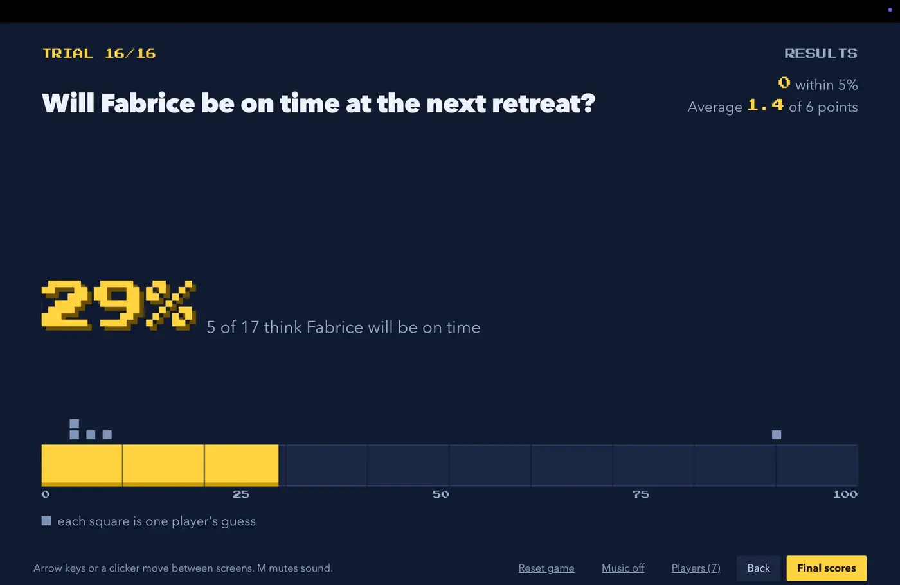
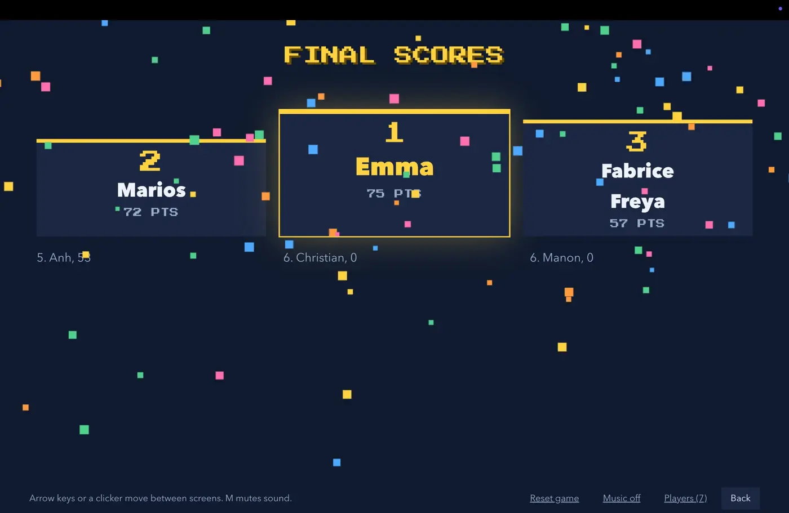

Game design · 2026
Line Up
L’un de mes deux cadeaux de départ pour le labo : un jeu d’ambiance construit à partir des réponses de mes collègues, et un hommage à huit ans au labo, plein de clins d’œil à ma thèse. Conçu et développé en moins de deux jours, avec Claude.
- Rôle
- Concept, game design et développement
- Contexte
- Retraite annuelle, Brain & Learning Lab, octobre 2026
- Joueurs
- Une vingtaine de personnes, en 5 équipes
- Réalisation
- En moins de deux jours, avec Claude ; une application web rejointe par QR code

Le point de départ
La retraite du labo est un rendez-vous annuel, surtout consacré à l’écriture, au travail et aux présentations. À ma première, j’avais animé une séance d’improvisation ; ensuite, comme tout le monde, je m’en suis tenu au programme. Une fois ma thèse terminée en mars 2025, l’énergie de donner en lien et en jeu est revenue : cette année-là, j’ai animé un simple Kahoot sur des anecdotes, où il fallait deviner à qui elles appartenaient. En 2026, je suis passé au niveau supérieur. C’était ma dernière retraite, mon nouveau poste déjà trouvé, et je n’étais même pas sûr de pouvoir venir : c’est devenu un cadeau de départ.
Le jeu
J’ai décidé à la dernière minute, si bien que le questionnaire a été envoyé pendant la retraite elle-même : des questions oui/non et des échelles. Line Up a transformé les réponses en 16 manches de deux types :
- Deviner le pourcentage : combien d’entre nous ont répondu oui ? « Fabrice sera-t-il à l’heure à la prochaine retraite ? »
- Classer quatre collègues sur une échelle : plantes d’intérieur gardées en vie, onglets ouverts, heures de jeu vidéo. Un point pour chaque paire remise dans le bon ordre.
Chaque membre du labo apparaissait autant que les autres, pour que tout le monde se sente inclus, avec quatre personnes assez éloignées sur chaque échelle pour que le classement reste intéressant. Les réponses arrivaient en direct à mesure que les équipes validaient, et certaines étaient accompagnées de commentaires qui s’affichaient à la révélation.
Les questions mêlaient quelques private jokes à des questions accessibles à tous, car certains joueurs étaient des anciens ou des invités qui ne connaissaient plus bien le labo. Du jeu, mais toujours en sécurité : rien qui puisse gêner ou exposer qui que ce soit.



Un hommage, construit sur ma recherche
La révélation est un tracé façon EEG : chaque prénom apparaît comme un pic, avec les mêmes sons « oddball » que l’expérience de ma thèse. Les manches sont numérotées comme dans une expérience, et un voyant « REC » clignote pendant que les équipes valident. Une consigne était reprise mot pour mot d’un questionnaire conçu au labo, d’une longueur glorieuse, avec ses co-auteurs dans la salle. Le reste est de l’arcade pure : musique 8-bit, polices pixel, et un podium avec confettis.
Itérer là où ça compte
Comme pour tout projet, j’ai commencé par l’intention : ce que le jeu devait faire ressentir aux joueurs. Comme je savais exactement ce que je voulais pour les mécaniques centrales, j’ai pu écrire des spécifications très précises, puis prendre le temps de nombreuses itérations. La plupart ont porté sur l’ergonomie, pour que le jeu soit infaillible sur téléphone :
- je suis passé du toucher au glisser-déposer, bien plus intuitif pour classer ;
- sélectionner, verrouiller et libérer un prénom est devenu sans ambiguïté ;
- chaque étape donnait un retour clair : les ingrédients du flow et d’un bon game design.
Sur le grand écran, je décidais quand passer à la manche suivante, et pouvais revenir en arrière.
Le jour J
Le jeu tournait comme une application web sur mon ordinateur, et les joueurs le rejoignaient par QR code. Le Wi-Fi du lieu était trop faible, alors je suis passé par le partage de connexion de mon téléphone, limité à cinq appareils. Nous avons donc joué en cinq équipes plutôt qu’en individuel, et c’était encore mieux : une vingtaine de personnes, à débattre de chaque classement ensemble.
Ce que j’en retiens
Une intention claire, c’est ce qui a rendu le projet rapide. Savoir ce que le jeu devait faire ressentir m’a permis de consacrer mon temps limité aux éléments que les joueurs allaient toucher. Et un échec technique peut devenir un cadeau de design : la limite de cinq appareils a transformé un quiz individuel en conversation d’équipe.